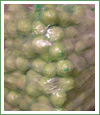
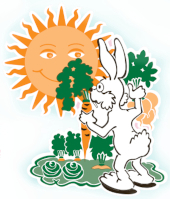
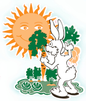
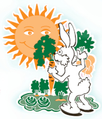

Ympäristö
Puhdas ympäristö on onnistuneen vihannesviljelyn edellytys. Siksi viljelijämme toimivatkin luontoa kunnioittaen ja vaalien. Vain puhtaasta luonnosta voidaan saada puhtaita kasviksia.Kaikki viljelijämme ovat sitoutuneet noudattamaan ympäristötuen ehtoja. Lisäksi viljelytoimenpiteet pyritään aina valitsemaan niin, että ne mahdollisimman vähän kuormittaisivat luontoa.
Myös tuotteiden pakkauksessa ympäristönäkökohdat otetaan huomioon. Aina, kun mahdollista, tuotteet pakataan kierrätyslaatikoihin ympäristökuormituksen vähentämiseksi.
Suomalainen puhdas luonto tarjoaa meille ainutlaatuiset puitteet vihannesten ja juuresten tuottamiseen. Siksi toimimmekin luonnon ehdoilla suomalaisen kuluttajan parhaaksi.

 

